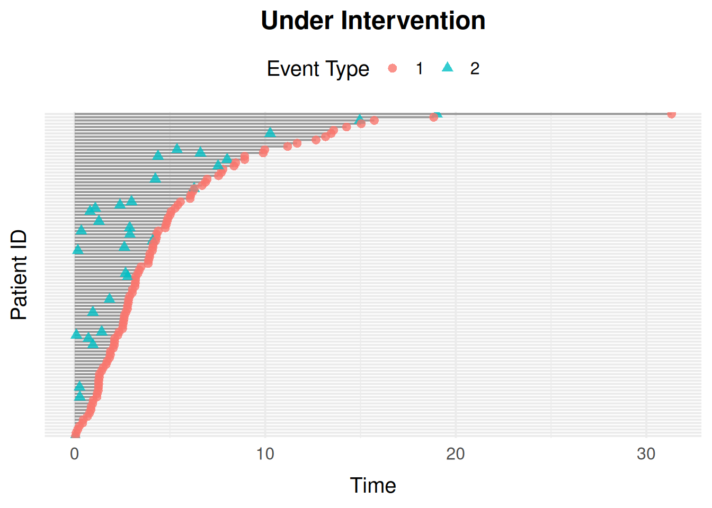

library(simevent)
library(survival)
compare_graph <- function(wrapper_data, graph_data) {
wrapper_data <- as.data.frame(wrapper_data)
graph_data <- as.data.frame(graph_data)
names(graph_data)[match(c("id", "time", "delta"), names(graph_data))] <-
c("ID", "Time", "Delta")
isTRUE(all.equal(
wrapper_data,
graph_data[names(wrapper_data)],
tolerance = 1e-6
))
}compare_graph() checks that a sim_event_graph() reproduction draws the exact same random numbers, in the same order, as the wrapper it’s reproducing. That only holds below for simSurvData()/simCRdata().
simDisease()/simTreatment() each have a "transient" process, so some individuals finish before others; sim_event_graph() draws random numbers only for whoever’s still being simulated, while the wrapper always draws for everyone (including those already finished) and discards the unused draws.
Introduction
This introduces the new API with sim_event_graph(), which is (probably?) a better interface.
The sim_graph() Interface
A sim_graph() call has three kinds of possible inputs:
-
sim_covariate(): a baseline covariate generator. TakesNand, optionally, any other covariate defined earlier in the same call (matched by argument name). -
sim_process(): a"censoring","terminal", or"transient"(fires at mostlimittimes, defaultInf) process, with Weibulleta/nuparameters. -
sim_effect(): afrom -> toedge with a Cox-typecoef, wherefromis a covariate or process name andtois a process name.
graph <- sim_graph(
L0 = sim_covariate(function(N) rbinom(N, 1, 0.4)),
censoring = sim_process("censoring", eta = 0.1, nu = 1.1),
death = sim_process("terminal", eta = 0.1, nu = 1.1),
effects = list(sim_effect("L0", "death", coef = 1.5))
)
graph
#> <sim_graph>
#> 1 covariate(s): L0
#> 2 process(es): censoring, death
#> 1 effect(s)
data <- sim_event_graph(graph, n = 100)
head(data)
#> Key: <id>
#> id time delta L0
#> <int> <num> <int> <int>
#> 1: 1 1.3269158 0 0
#> 2: 2 0.1127537 1 1
#> 3: 3 2.3286819 0 0
#> 4: 4 1.8986339 1 0
#> 5: 5 4.2103320 1 1
#> 6: 6 0.9263833 0 0sim_event_graph()’s intervene argument replaces sim.generic()’s alpha.intervention/baseline.intervention pair with a single named list: give a process name to scale its eta, or a covariate name to fix it to a constant.
data_intervened <- sim_event_graph(
graph,
n = 100,
intervene = list(death = 0.2, L0 = 1)
)
head(data_intervened)
#> Key: <id>
#> id time delta L0
#> <int> <num> <int> <num>
#> 1: 1 1.194452 1 1
#> 2: 2 1.568504 1 1
#> 3: 3 6.463053 0 1
#> 4: 4 1.316111 1 1
#> 5: 5 5.827507 0 1
#> 6: 6 1.322803 1 1Reproducing the Preset Wrappers
simSurvData()
simSurvData()’s default (beta = NULL, i.e. no covariate effects) is two terminal processes, censoring and death, both with eta = 0.1, nu = 1.1:
set.seed(1405)
wrapper_data <- simSurvData(200)
set.seed(1405)
graph <- sim_graph(
L0 = sim_covariate(function(N) runif(N)),
A0 = sim_covariate(function(N, L0) rbinom(N, 1, 0.5)),
censoring = sim_process("censoring", eta = 0.1, nu = 1.1),
death = sim_process("terminal", eta = 0.1, nu = 1.1)
)
graph_data <- sim_event_graph(graph, n = 200)
compare_graph(wrapper_data, graph_data)
#> [1] TRUE
simCRdata()
simCRdata() adds a third terminal process (a second competing cause):
set.seed(1405)
beta <- matrix(c(0.5, -1, -0.5, 0.5, 0, 0.5), ncol = 3, nrow = 2)
wrapper_data <- simCRdata(N = 200, beta = beta)
set.seed(1405)
graph <- sim_graph(
L0 = sim_covariate(function(N) runif(N)),
A0 = sim_covariate(function(N, L0) rbinom(N, 1, 0.5)),
censoring = sim_process("censoring", eta = 0.1, nu = 1.1),
cause1 = sim_process("terminal", eta = 0.1, nu = 1.1),
cause2 = sim_process("terminal", eta = 0.1, nu = 1.1),
effects = list(
sim_effect("L0", "censoring", 0.5),
sim_effect("A0", "censoring", -1),
sim_effect("L0", "cause1", -0.5),
sim_effect("A0", "cause1", 0.5),
sim_effect("A0", "cause2", 0.5)
)
)
graph_data <- sim_event_graph(graph, n = 200)
compare_graph(wrapper_data, graph_data)
#> [1] TRUE
simDisease()
simDisease() has a censoring process, a terminal death process, and a covariate process L that can happen at most once and can itself affect death; a "transient" process with limit = 1. Since L can fire, the simulation loop can run more than once per individual, so sim_event_graph()’s random draws no longer line up one-to-one with simDisease()’s (see the note on compare_graph() above); event-type proportions are compared instead:
set.seed(1405)
wrapper_data <- simDisease(
N = 5000,
cens = 1,
eta = c(0.1, 0.3, 0.1),
nu = c(1.1, 1.3, 1.1),
beta_L0_L = 1,
beta_A0_L = -1.1,
beta_L_D = 1,
beta_L0_D = 0
)
graph <- sim_graph(
L0 = sim_covariate(function(N) runif(N)),
A0 = sim_covariate(function(N, L0) rbinom(N, 1, 0.5)),
censoring = sim_process("censoring", eta = 0.1, nu = 1.1),
death = sim_process("terminal", eta = 0.3, nu = 1.3),
L = sim_process("transient", eta = 0.1, nu = 1.1, limit = 1),
effects = list(
sim_effect("L0", "L", 1),
sim_effect("A0", "L", -1.1),
sim_effect("L", "death", 1)
)
)
graph_data <- sim_event_graph(graph, n = 5000)
rbind(
simDisease = prop.table(table(wrapper_data$Delta)),
sim_graph = prop.table(table(graph_data$delta))
)
#> 0 1 2
#> simDisease 0.1687941 0.6709775 0.1602284
#> sim_graph 0.1593545 0.6811229 0.1595226
simTreatment()
simTreatment() (with op = 1, the default) adds a second "transient" process, treatment (A), which can itself affect and be affected by the covariate process L. simTreatment() doesn’t declare its own A0, so its reproduction doesn’t need one either – sim_graph() forces no default covariates:
set.seed(1405)
wrapper_data <- simTreatment(
N = 5000,
beta_L_A = 1,
beta_L_D = 1,
beta_A_D = -1,
beta_A_L = -0.5,
beta_L0_A = 1,
eta = rep(0.1, 4),
nu = rep(1.1, 4),
cens = 1,
op = 1
)
graph <- sim_graph(
L0 = sim_covariate(function(N) runif(N)),
censoring = sim_process("censoring", eta = 0.1, nu = 1.1),
death = sim_process("terminal", eta = 0.1, nu = 1.1),
A = sim_process("transient", eta = 0.1, nu = 1.1, limit = 1),
L = sim_process("transient", eta = 0.1, nu = 1.1, limit = 1),
effects = list(
sim_effect("L0", "death", 1),
sim_effect("L0", "A", 1),
sim_effect("L0", "L", 1),
sim_effect("A", "death", -1),
sim_effect("A", "L", -0.5),
sim_effect("L", "death", 1),
sim_effect("L", "A", 1)
)
)
graph_data <- sim_event_graph(graph, n = 5000)
rbind(
simTreatment = prop.table(table(wrapper_data$Delta)),
sim_graph = prop.table(table(graph_data$delta))
)
#> 0 1 2 3
#> simTreatment 0.2233639 0.3350458 0.2285012 0.2130891
#> sim_graph 0.2180713 0.3445482 0.2259480 0.2114324
simStatinData()
simStatinData() mainly demonstrates non-default baseline covariate generators. sim_covariate() reproduces this directly, with no forced covariate names to work around:
set.seed(1405)
graph <- sim_graph(
L0 = sim_covariate(function(N) rbinom(N, 1, 0.4)),
A0 = sim_covariate(function(N, L0) pmin(rexp(N, 0.3) + 70, 100)),
censoring = sim_process("censoring", eta = 0.025, nu = 1.1),
death = sim_process("terminal", eta = 0.025, nu = 1.1)
)
graph_data <- sim_event_graph(graph, n = 200)
summary(graph_data$A0)
#> Min. 1st Qu. Median Mean 3rd Qu. Max.
#> 70.00 70.82 71.96 73.14 74.18 85.01Estimating Intervention Effects
alphaSim() and intEffectAlpha() simulate one of the preset settings with the shape parameter eta of one process multiplied by alpha, and summarise the result as the proportion of individuals experiencing death and the intervened process by time \tau (or the years lost to them before \tau). With the graph API this splits into two general steps, which work for any process in any graph:
- Simulate under the intervention with
sim_event_graph()’sinterveneargument:intervene = list(<process> = alpha)multiplies that process’setabyalpha. - Summarise with
event_risk(): the risk P(T \le \tau) of each process’s first event, or (type = "time_lost") the expected time lost to it before \tau, E[\tau - \min(T, \tau)].
Take alphaSim()’s "Disease" setting with alpha = 0.5, which halves the hazard of the disease process L:
The same model as a graph:
disease_graph <- sim_graph(
L0 = sim_covariate(function(N) runif(N)),
A0 = sim_covariate(function(N, L0) rbinom(N, 1, 0.5)),
censoring = sim_process("censoring", eta = 0.1, nu = 1.1),
death = sim_process("terminal", eta = 0.1, nu = 1.1),
L = sim_process("transient", eta = 0.1, nu = 1.1, limit = 1),
effects = list(
sim_effect("L0", "death", 1),
sim_effect("L0", "L", 1),
sim_effect("L", "death", 1)
)
)alphaSim() switches censoring off by default (cens = 0). Simulating both with and without the intervention gives the effect directly:
set.seed(1405)
observed <- sim_event_graph(disease_graph, n = 5000, cens = 0)
intervened <- sim_event_graph(
disease_graph,
n = 5000,
cens = 0,
intervene = list(L = 0.5)
)
risk_observed <- event_risk(observed, disease_graph, c("death", "L"), tau = 5)
risk_intervened <- event_risk(
intervened,
disease_graph,
c("death", "L"),
tau = 5
)
cbind(
risk_observed[, "process"],
observed = risk_observed$risk,
intervened = risk_intervened$risk
)
#> process observed intervened
#> <char> <num> <num>
#> 1: death 0.7536 0.7048
#> 2: L 0.4240 0.2522Halving the disease hazard lowers the risk of disease, and, since disease raises the death hazard (sim_effect("L", "death", 1)), the risk of death too.
alphaSim()/intEffectAlpha()’s years_lost = TRUE corresponds to type = "time_lost", and their a0 argument (summarise only individuals with A0 == a0) to by = "A0", which summarises every group at once:
event_risk(
intervened,
disease_graph,
c("death", "L"),
tau = 5,
type = "time_lost",
by = "A0"
)
#> A0 process time_lost
#> <int> <char> <num>
#> 1: 0 death 1.9576333
#> 2: 1 death 1.9396741
#> 3: 0 L 0.7580466
#> 4: 1 L 0.7724950by conditions on the observed value of A0. For a do()-style contrast, where everyone’s A0 is set to a value, fix it with intervene instead, e.g. intervene = list(L = 0.5, A0 = 1).
Finally, intEffectAlpha()’s plot = TRUE is plot_event_data() on the intervened data:
plot_event_data(
intervened[intervened$id <= 100, ],
title = "Under Intervention"
)
Building a sim_graph() from Fitted Cox Models
sim_graph_from_fits() is the graph-native replacement for sim.from.data(): instead of user-specified effects, it builds a sim_graph() from a set of fitted coxph() models (one per process) and the data they were fit to, so simulated data mimics an observed dataset’s distribution.
Unlike sim.from.data(), which requires building a sim.parameters list, including a baseline.summary computed by hand from mean()/ sd()/min()/max(), sim_graph_from_fits() reads baseline covariate distributions straight from the data itself.
# Some "observed" data, from a 3-cause competing-risks sim_graph():
set.seed(1405)
observed_graph <- sim_graph(
L0 = sim_covariate(function(N) runif(N)),
A0 = sim_covariate(function(N, L0) rbinom(N, 1, 0.5)),
censoring = sim_process("censoring", eta = 0.1, nu = 1.1),
cause1 = sim_process("terminal", eta = 0.1, nu = 1.1),
cause2 = sim_process("terminal", eta = 0.1, nu = 1.1),
effects = list(
sim_effect("L0", "censoring", 0.5),
sim_effect("A0", "censoring", -1),
sim_effect("L0", "cause1", -0.5),
sim_effect("A0", "cause1", 0.5),
sim_effect("A0", "cause2", 0.5)
)
)
observed_data <- sim_event_graph(observed_graph, n = 1000)
# Refit each process from that "observed" data, then rebuild a sim_graph()
# from the fits, as if observed_data came from an outside source and
# observed_graph were unknown:
fits <- list(
censoring = coxph(Surv(time, delta == 0) ~ L0 + A0, data = observed_data),
cause1 = coxph(Surv(time, delta == 1) ~ L0 + A0, data = observed_data),
cause2 = coxph(Surv(time, delta == 2) ~ L0 + A0, data = observed_data)
)
types <- c(censoring = "censoring", cause1 = "terminal", cause2 = "terminal")
graph <- sim_graph_from_fits(fits, observed_data, types)
graph
#> <sim_graph>
#> 2 covariate(s): L0, A0
#> 3 process(es): censoring, cause1, cause2
#> 6 effect(s)Each process’s Weibull eta/nu is approximated from its coxph() fit’s baseline cumulative hazard, by regressing log(cumulative hazard) on log(time) (a Weibull hazard is linear on that scale).
new_data <- sim_event_graph(graph, n = 1000)
head(new_data)
#> Key: <id>
#> id time delta L0 A0
#> <int> <num> <int> <num> <int>
#> 1: 1 4.549795 0 1.0532139 1
#> 2: 2 3.550653 0 0.5385115 0
#> 3: 3 1.797275 1 0.8235271 1
#> 4: 4 1.095931 2 0.7444320 0
#> 5: 5 8.083563 0 0.4030154 0
#> 6: 6 1.474290 0 0.4556481 1
# Event-type distribution should be comparable between the observed and
# newly simulated data:
rbind(
observed = prop.table(table(observed_data$delta)),
simulated = prop.table(table(new_data$delta))
)
#> 0 1 2
#> observed 0.294 0.316 0.390
#> simulated 0.280 0.327 0.393Categorical Baseline Covariates
A categorical baseline covariate must be a factor column in data, referenced directly in the coxph() formula (not wrapped in factor() there). sim_graph_from_fits() regenerates it as a categorical draw from its observed level proportions, plus one sim_derived() dummy per non-reference level, named to match coxph()’s own coefficient names ("<variable><level>"). The graph-native replacement for sim.from.data()’s "(region==2)"-style expression matching.
observed_data$region <- factor(sample(
c("a", "b", "c"),
nrow(observed_data),
replace = TRUE,
prob = c(0.5, 0.3, 0.2)
))
fits_region <- list(
censoring = coxph(
Surv(time, delta == 0) ~ L0 + region,
data = observed_data
),
cause1 = coxph(Surv(time, delta == 1) ~ L0 + region, data = observed_data),
cause2 = coxph(Surv(time, delta == 2) ~ L0, data = observed_data)
)
graph_region <- sim_graph_from_fits(fits_region, observed_data, types)
graph_region
#> <sim_graph>
#> 4 covariate(s): L0, region, regionb, regionc
#> 3 process(es): censoring, cause1, cause2
#> 7 effect(s)